Working with shrinkr in the Tidy Bayesian Ecosystem
Jacob M. Maronge
2026-06-12
Source:vignettes/tidy_bayesian_workflow.Rmd
tidy_bayesian_workflow.Rmd
knitr::opts_chunk$set(
collapse = TRUE,
comment = "#>",
fig.width = 8,
fig.height = 6,
warning = FALSE,
message = FALSE
)Overview
shrinkr is designed to work seamlessly with modern R workflows. This vignette shows practical examples of using shrinkr with:
- tidyverse: dplyr, ggplot2, tidyr for data manipulation and visualization
- posterior: Working with MCMC draws, computing summaries and diagnostics
- bayesplot: MCMC diagnostic plots (trace plots, pairs plots, etc.)
- tidybayes: Tidy manipulation of Bayesian posteriors
- ggdist: Modern distribution visualizations
Example: Multi-Region Clinical Trial
Imagine a clinical trial run across 5 regions testing a new treatment. We have Stage 1 posterior samples from region-specific analyses.
Simulate Stage 1 Results
set.seed(1104)
# True effects (unknown in practice)
true_effects <- c(0.45, 0.60, 0.38, -0.10, 0.65)
region_names <- c("North", "South", "East", "West", "Central")
# Simulate posterior samples from Stage 1
samples_list <- lapply(1:5, function(i) {
matrix(rnorm(2000, true_effects[i], 0.20), ncol = 1)
})
names(samples_list) <- region_namesFit shrinkr Model
# Fit mixture approximation
mix <- fit_mixture(samples_list, K_max = 3, verbose = FALSE)
# Specify hierarchical priors
priors <- list(
mu = dist_normal(0, 5),
tau = dist_truncated(dist_student_t(3, 0, 1), lower = 0)
)
# Run hierarchical shrinkage
fit <- shrink(
mixture = mix,
hierarchical_priors = priors,
chains = 4,
iter = 2000,
warmup = 1000,
cores = 1,
seed = 2024,
refresh = 0
)
#>
#> SAMPLING FOR MODEL 'stage2_shrinkage' NOW (CHAIN 1).
#> Chain 1:
#> Chain 1: Gradient evaluation took 1.3e-05 seconds
#> Chain 1: 1000 transitions using 10 leapfrog steps per transition would take 0.13 seconds.
#> Chain 1: Adjust your expectations accordingly!
#> Chain 1:
#> Chain 1:
#> Chain 1: Iteration: 1 / 2000 [ 0%] (Warmup)
#> Chain 1: Iteration: 100 / 2000 [ 5%] (Warmup)
#> Chain 1: Iteration: 200 / 2000 [ 10%] (Warmup)
#> Chain 1: Iteration: 300 / 2000 [ 15%] (Warmup)
#> Chain 1: Iteration: 400 / 2000 [ 20%] (Warmup)
#> Chain 1: Iteration: 500 / 2000 [ 25%] (Warmup)
#> Chain 1: Iteration: 600 / 2000 [ 30%] (Warmup)
#> Chain 1: Iteration: 700 / 2000 [ 35%] (Warmup)
#> Chain 1: Iteration: 800 / 2000 [ 40%] (Warmup)
#> Chain 1: Iteration: 900 / 2000 [ 45%] (Warmup)
#> Chain 1: Iteration: 1000 / 2000 [ 50%] (Warmup)
#> Chain 1: Iteration: 1001 / 2000 [ 50%] (Sampling)
#> Chain 1: Iteration: 1100 / 2000 [ 55%] (Sampling)
#> Chain 1: Iteration: 1200 / 2000 [ 60%] (Sampling)
#> Chain 1: Iteration: 1300 / 2000 [ 65%] (Sampling)
#> Chain 1: Iteration: 1400 / 2000 [ 70%] (Sampling)
#> Chain 1: Iteration: 1500 / 2000 [ 75%] (Sampling)
#> Chain 1: Iteration: 1600 / 2000 [ 80%] (Sampling)
#> Chain 1: Iteration: 1700 / 2000 [ 85%] (Sampling)
#> Chain 1: Iteration: 1800 / 2000 [ 90%] (Sampling)
#> Chain 1: Iteration: 1900 / 2000 [ 95%] (Sampling)
#> Chain 1: Iteration: 2000 / 2000 [100%] (Sampling)
#> Chain 1:
#> Chain 1: Elapsed Time: 0.053 seconds (Warm-up)
#> Chain 1: 0.04 seconds (Sampling)
#> Chain 1: 0.093 seconds (Total)
#> Chain 1:
#>
#> SAMPLING FOR MODEL 'stage2_shrinkage' NOW (CHAIN 2).
#> Chain 2:
#> Chain 2: Gradient evaluation took 5e-06 seconds
#> Chain 2: 1000 transitions using 10 leapfrog steps per transition would take 0.05 seconds.
#> Chain 2: Adjust your expectations accordingly!
#> Chain 2:
#> Chain 2:
#> Chain 2: Iteration: 1 / 2000 [ 0%] (Warmup)
#> Chain 2: Iteration: 100 / 2000 [ 5%] (Warmup)
#> Chain 2: Iteration: 200 / 2000 [ 10%] (Warmup)
#> Chain 2: Iteration: 300 / 2000 [ 15%] (Warmup)
#> Chain 2: Iteration: 400 / 2000 [ 20%] (Warmup)
#> Chain 2: Iteration: 500 / 2000 [ 25%] (Warmup)
#> Chain 2: Iteration: 600 / 2000 [ 30%] (Warmup)
#> Chain 2: Iteration: 700 / 2000 [ 35%] (Warmup)
#> Chain 2: Iteration: 800 / 2000 [ 40%] (Warmup)
#> Chain 2: Iteration: 900 / 2000 [ 45%] (Warmup)
#> Chain 2: Iteration: 1000 / 2000 [ 50%] (Warmup)
#> Chain 2: Iteration: 1001 / 2000 [ 50%] (Sampling)
#> Chain 2: Iteration: 1100 / 2000 [ 55%] (Sampling)
#> Chain 2: Iteration: 1200 / 2000 [ 60%] (Sampling)
#> Chain 2: Iteration: 1300 / 2000 [ 65%] (Sampling)
#> Chain 2: Iteration: 1400 / 2000 [ 70%] (Sampling)
#> Chain 2: Iteration: 1500 / 2000 [ 75%] (Sampling)
#> Chain 2: Iteration: 1600 / 2000 [ 80%] (Sampling)
#> Chain 2: Iteration: 1700 / 2000 [ 85%] (Sampling)
#> Chain 2: Iteration: 1800 / 2000 [ 90%] (Sampling)
#> Chain 2: Iteration: 1900 / 2000 [ 95%] (Sampling)
#> Chain 2: Iteration: 2000 / 2000 [100%] (Sampling)
#> Chain 2:
#> Chain 2: Elapsed Time: 0.054 seconds (Warm-up)
#> Chain 2: 0.041 seconds (Sampling)
#> Chain 2: 0.095 seconds (Total)
#> Chain 2:
#>
#> SAMPLING FOR MODEL 'stage2_shrinkage' NOW (CHAIN 3).
#> Chain 3:
#> Chain 3: Gradient evaluation took 5e-06 seconds
#> Chain 3: 1000 transitions using 10 leapfrog steps per transition would take 0.05 seconds.
#> Chain 3: Adjust your expectations accordingly!
#> Chain 3:
#> Chain 3:
#> Chain 3: Iteration: 1 / 2000 [ 0%] (Warmup)
#> Chain 3: Iteration: 100 / 2000 [ 5%] (Warmup)
#> Chain 3: Iteration: 200 / 2000 [ 10%] (Warmup)
#> Chain 3: Iteration: 300 / 2000 [ 15%] (Warmup)
#> Chain 3: Iteration: 400 / 2000 [ 20%] (Warmup)
#> Chain 3: Iteration: 500 / 2000 [ 25%] (Warmup)
#> Chain 3: Iteration: 600 / 2000 [ 30%] (Warmup)
#> Chain 3: Iteration: 700 / 2000 [ 35%] (Warmup)
#> Chain 3: Iteration: 800 / 2000 [ 40%] (Warmup)
#> Chain 3: Iteration: 900 / 2000 [ 45%] (Warmup)
#> Chain 3: Iteration: 1000 / 2000 [ 50%] (Warmup)
#> Chain 3: Iteration: 1001 / 2000 [ 50%] (Sampling)
#> Chain 3: Iteration: 1100 / 2000 [ 55%] (Sampling)
#> Chain 3: Iteration: 1200 / 2000 [ 60%] (Sampling)
#> Chain 3: Iteration: 1300 / 2000 [ 65%] (Sampling)
#> Chain 3: Iteration: 1400 / 2000 [ 70%] (Sampling)
#> Chain 3: Iteration: 1500 / 2000 [ 75%] (Sampling)
#> Chain 3: Iteration: 1600 / 2000 [ 80%] (Sampling)
#> Chain 3: Iteration: 1700 / 2000 [ 85%] (Sampling)
#> Chain 3: Iteration: 1800 / 2000 [ 90%] (Sampling)
#> Chain 3: Iteration: 1900 / 2000 [ 95%] (Sampling)
#> Chain 3: Iteration: 2000 / 2000 [100%] (Sampling)
#> Chain 3:
#> Chain 3: Elapsed Time: 0.053 seconds (Warm-up)
#> Chain 3: 0.041 seconds (Sampling)
#> Chain 3: 0.094 seconds (Total)
#> Chain 3:
#>
#> SAMPLING FOR MODEL 'stage2_shrinkage' NOW (CHAIN 4).
#> Chain 4:
#> Chain 4: Gradient evaluation took 4e-06 seconds
#> Chain 4: 1000 transitions using 10 leapfrog steps per transition would take 0.04 seconds.
#> Chain 4: Adjust your expectations accordingly!
#> Chain 4:
#> Chain 4:
#> Chain 4: Iteration: 1 / 2000 [ 0%] (Warmup)
#> Chain 4: Iteration: 100 / 2000 [ 5%] (Warmup)
#> Chain 4: Iteration: 200 / 2000 [ 10%] (Warmup)
#> Chain 4: Iteration: 300 / 2000 [ 15%] (Warmup)
#> Chain 4: Iteration: 400 / 2000 [ 20%] (Warmup)
#> Chain 4: Iteration: 500 / 2000 [ 25%] (Warmup)
#> Chain 4: Iteration: 600 / 2000 [ 30%] (Warmup)
#> Chain 4: Iteration: 700 / 2000 [ 35%] (Warmup)
#> Chain 4: Iteration: 800 / 2000 [ 40%] (Warmup)
#> Chain 4: Iteration: 900 / 2000 [ 45%] (Warmup)
#> Chain 4: Iteration: 1000 / 2000 [ 50%] (Warmup)
#> Chain 4: Iteration: 1001 / 2000 [ 50%] (Sampling)
#> Chain 4: Iteration: 1100 / 2000 [ 55%] (Sampling)
#> Chain 4: Iteration: 1200 / 2000 [ 60%] (Sampling)
#> Chain 4: Iteration: 1300 / 2000 [ 65%] (Sampling)
#> Chain 4: Iteration: 1400 / 2000 [ 70%] (Sampling)
#> Chain 4: Iteration: 1500 / 2000 [ 75%] (Sampling)
#> Chain 4: Iteration: 1600 / 2000 [ 80%] (Sampling)
#> Chain 4: Iteration: 1700 / 2000 [ 85%] (Sampling)
#> Chain 4: Iteration: 1800 / 2000 [ 90%] (Sampling)
#> Chain 4: Iteration: 1900 / 2000 [ 95%] (Sampling)
#> Chain 4: Iteration: 2000 / 2000 [100%] (Sampling)
#> Chain 4:
#> Chain 4: Elapsed Time: 0.055 seconds (Warm-up)
#> Chain 4: 0.042 seconds (Sampling)
#> Chain 4: 0.097 seconds (Total)
#> Chain 4:Working with posterior Package
The posterior package provides the foundation for working with MCMC draws.
Extract Draws
# Extract all parameters as draws_df
draws <- as_draws_df(fit)
# See what's available
variables(draws)
#> [1] "mu" "tau" "theta[1]" "theta[2]" "theta[3]"
#> [6] "theta[4]" "theta[5]" "tau_squared" "lp__"
# Extract specific parameters
mu_tau_draws <- extract_mu_tau(fit)
theta_draws <- extract_theta(fit)Basic Summaries
# Quick summary of all parameters
summarize_draws(draws)
#> # A tibble: 9 × 10
#> variable mean median sd mad q5 q95 rhat ess_bulk ess_tail
#> <chr> <dbl> <dbl> <dbl> <dbl> <dbl> <dbl> <dbl> <dbl> <dbl>
#> 1 mu 0.386 0.399 0.201 0.154 4.86e-2 0.694 1.00 710. 380.
#> 2 tau 0.308 0.267 0.214 0.190 4.05e-2 0.716 1.00 769. 648.
#> 3 theta[1] 0.428 0.428 0.166 0.157 1.61e-1 0.707 1.00 4634. 3326.
#> 4 theta[2] 0.512 0.501 0.169 0.166 2.52e-1 0.803 1.00 2574. 3156.
#> 5 theta[3] 0.377 0.380 0.168 0.157 9.55e-2 0.645 1.000 4327. 2096.
#> 6 theta[4] 0.110 0.117 0.212 0.229 -2.50e-1 0.441 1.00 1430. 1594.
#> 7 theta[5] 0.543 0.530 0.175 0.175 2.69e-1 0.848 1.00 2649. 3222.
#> 8 tau_squar… 0.141 0.0714 0.204 0.0863 1.64e-3 0.513 1.00 769. 648.
#> 9 lp__ -6.50 -6.13 3.11 3.01 -1.22e+1 -1.97 1.00 960. 1396.
# Focus on theta parameters
summarize_draws(theta_draws, mean, sd, median, mad, ~quantile(.x, c(0.025, 0.975)))
#> # A tibble: 19 × 7
#> variable mean sd median mad `2.5%` `97.5%`
#> <chr> <dbl> <dbl> <dbl> <dbl> <dbl> <dbl>
#> 1 mu 0.386 0.201 0.399 0.154 -0.104 0.780
#> 2 tau 0.308 0.214 0.267 0.190 0.0217 0.847
#> 3 theta_c[1] -0.0214 0.981 -0.0380 0.974 -1.96 1.89
#> 4 theta_c[2] 0.0111 0.995 -0.00628 0.985 -1.95 1.95
#> 5 theta_c[3] 0.00781 0.971 0.00155 0.972 -1.92 1.94
#> 6 theta_c[4] -0.0293 0.998 -0.0347 1.00 -1.99 2.01
#> 7 theta_c[5] -0.00400 1.01 -0.00935 1.06 -1.94 1.95
#> 8 z[1] 0.131 0.747 0.123 0.720 -1.31 1.66
#> 9 z[2] 0.418 0.743 0.403 0.709 -1.03 1.91
#> 10 z[3] -0.0597 0.755 -0.0769 0.717 -1.52 1.47
#> 11 z[4] -0.971 0.783 -0.968 0.769 -2.52 0.593
#> 12 z[5] 0.502 0.764 0.505 0.706 -1.04 2.03
#> 13 theta[1] 0.428 0.166 0.428 0.157 0.106 0.756
#> 14 theta[2] 0.512 0.169 0.501 0.166 0.203 0.870
#> 15 theta[3] 0.377 0.168 0.380 0.157 0.0203 0.709
#> 16 theta[4] 0.110 0.212 0.117 0.229 -0.318 0.481
#> 17 theta[5] 0.543 0.175 0.530 0.175 0.227 0.911
#> 18 tau_squared 0.141 0.204 0.0714 0.0863 0.000472 0.717
#> 19 lp__ -6.50 3.11 -6.13 3.01 -13.5 -1.44
# Convergence diagnostics
summarize_draws(draws, default_convergence_measures())
#> # A tibble: 9 × 4
#> variable rhat ess_bulk ess_tail
#> <chr> <dbl> <dbl> <dbl>
#> 1 mu 1.00 710. 380.
#> 2 tau 1.00 769. 648.
#> 3 theta[1] 1.00 4634. 3326.
#> 4 theta[2] 1.00 2574. 3156.
#> 5 theta[3] 1.000 4327. 2096.
#> 6 theta[4] 1.00 1430. 1594.
#> 7 theta[5] 1.00 2649. 3222.
#> 8 tau_squared 1.00 769. 648.
#> 9 lp__ 1.00 960. 1396.
# Custom summaries
summarise_draws(
theta_draws,
mean,
sd,
prob_positive = ~mean(.x > 0),
prob_large = ~mean(.x > 0.5)
)
#> # A tibble: 19 × 5
#> variable mean sd prob_positive prob_large
#> <chr> <dbl> <dbl> <dbl> <dbl>
#> 1 mu 0.386 0.201 0.963 0.245
#> 2 tau 0.308 0.214 1 0.162
#> 3 theta_c[1] -0.0214 0.981 0.486 0.29
#> 4 theta_c[2] 0.0111 0.995 0.497 0.315
#> 5 theta_c[3] 0.00781 0.971 0.500 0.302
#> 6 theta_c[4] -0.0293 0.998 0.485 0.297
#> 7 theta_c[5] -0.00400 1.01 0.498 0.315
#> 8 z[1] 0.131 0.747 0.564 0.304
#> 9 z[2] 0.418 0.743 0.723 0.455
#> 10 z[3] -0.0597 0.755 0.463 0.216
#> 11 z[4] -0.971 0.783 0.0988 0.0305
#> 12 z[5] 0.502 0.764 0.758 0.501
#> 13 theta[1] 0.428 0.166 0.993 0.318
#> 14 theta[2] 0.512 0.169 0.999 0.502
#> 15 theta[3] 0.377 0.168 0.983 0.223
#> 16 theta[4] 0.110 0.212 0.695 0.018
#> 17 theta[5] 0.543 0.175 1.000 0.575
#> 18 tau_squared 0.141 0.204 1 0.0512
#> 19 lp__ -6.50 3.11 0.0015 0.00025Check Convergence
# Check Rhat for all parameters
all_rhats <- summarise_draws(draws, "rhat")
max(all_rhats$rhat, na.rm = TRUE)
#> [1] 1.003039
# Check effective sample size
summarise_draws(draws, "ess_bulk", "ess_tail") %>%
filter(ess_bulk < 400 | ess_tail < 400)
#> # A tibble: 1 × 3
#> variable ess_bulk ess_tail
#> <chr> <dbl> <dbl>
#> 1 mu 710. 380.
# Detailed diagnostics for specific parameters
summarise_draws(
subset_draws(draws, variable = c("mu", "tau")),
default_convergence_measures()
)
#> # A tibble: 2 × 4
#> variable rhat ess_bulk ess_tail
#> <chr> <dbl> <dbl> <dbl>
#> 1 mu 1.00 710. 380.
#> 2 tau 1.00 769. 648.Diagnostic Plots with bayesplot
bayesplot provides essential MCMC diagnostic visualizations.
Trace Plots
Check for mixing and stationarity:
# Check hyperparameters
mcmc_trace(draws, pars = c("mu", "tau", "tau_squared"))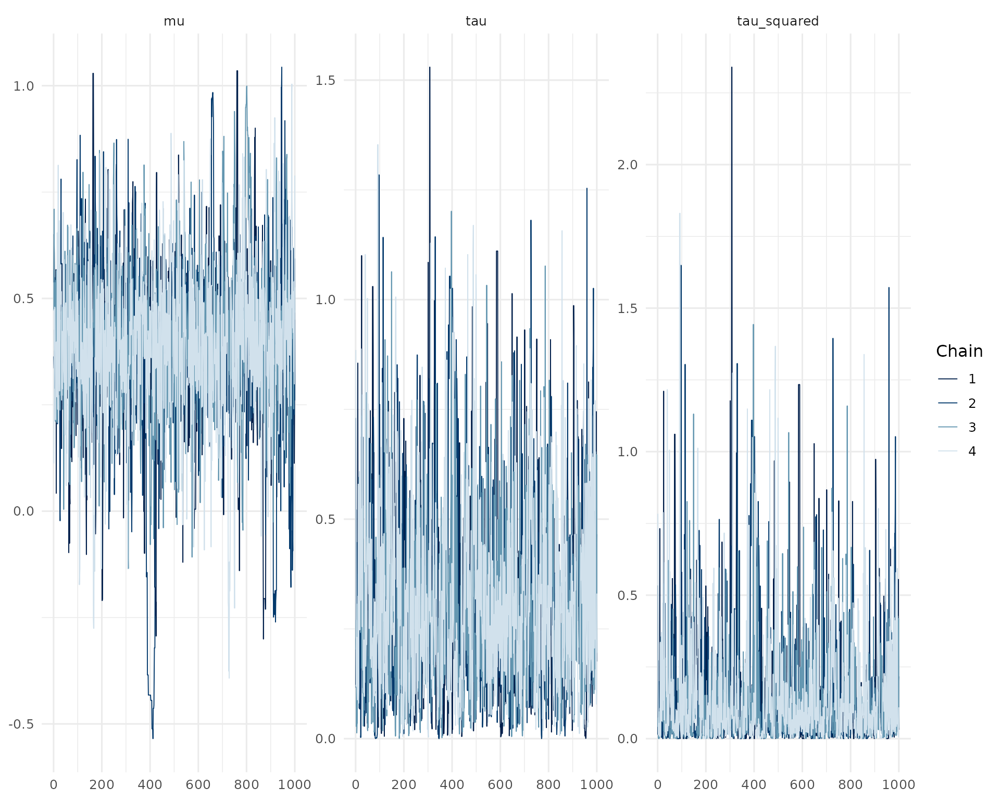
# Check first few thetas
mcmc_trace(draws, regex_pars = "theta\\[[1-3]\\]")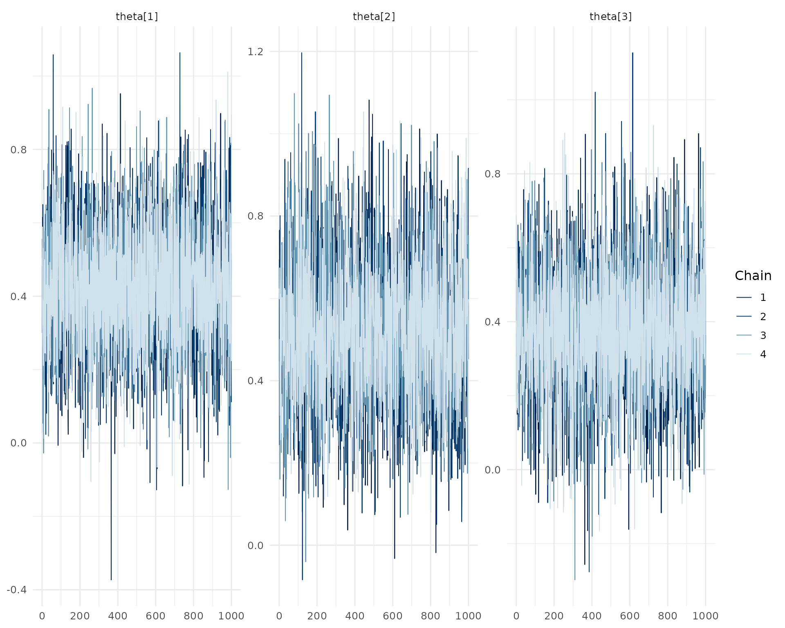
# All thetas at once (if not too many)
mcmc_trace(draws, regex_pars = "theta")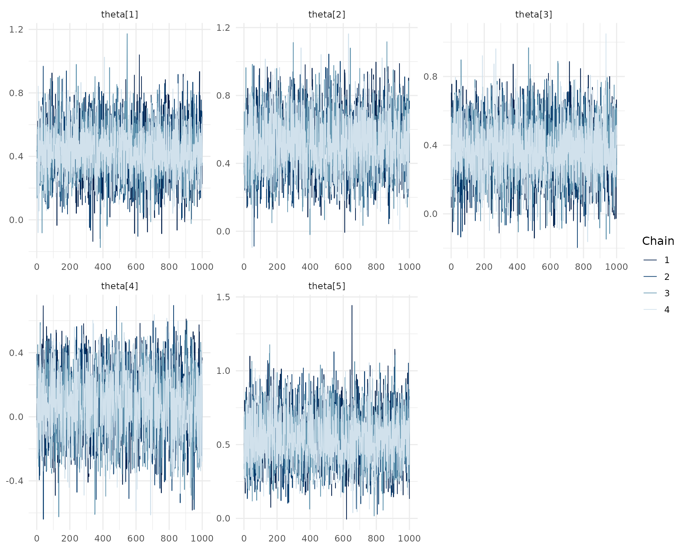
Density Plots
Compare chains and check for multimodality:
# Overlay densities from different chains
mcmc_dens_overlay(draws, pars = c("mu", "tau"))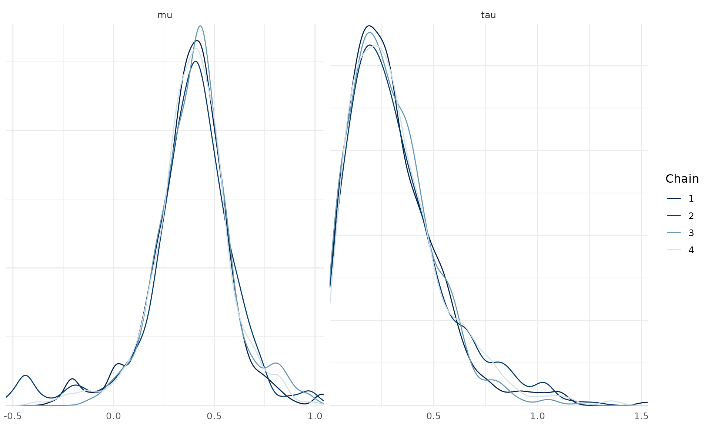
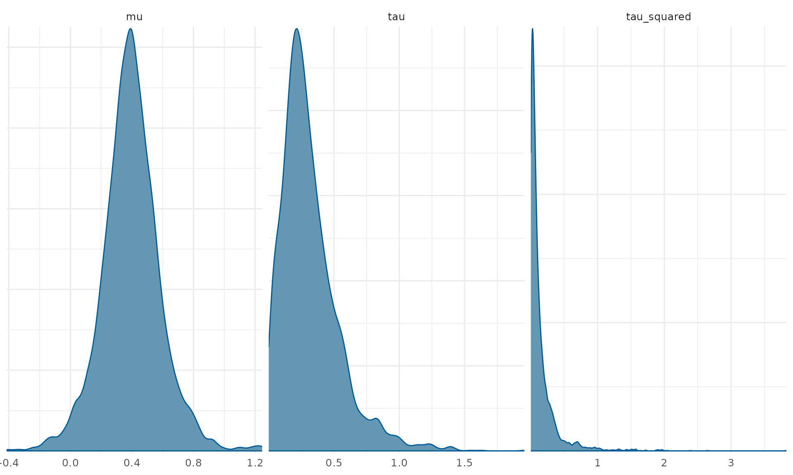
# Compare all thetas
mcmc_dens_overlay(draws, regex_pars = "theta")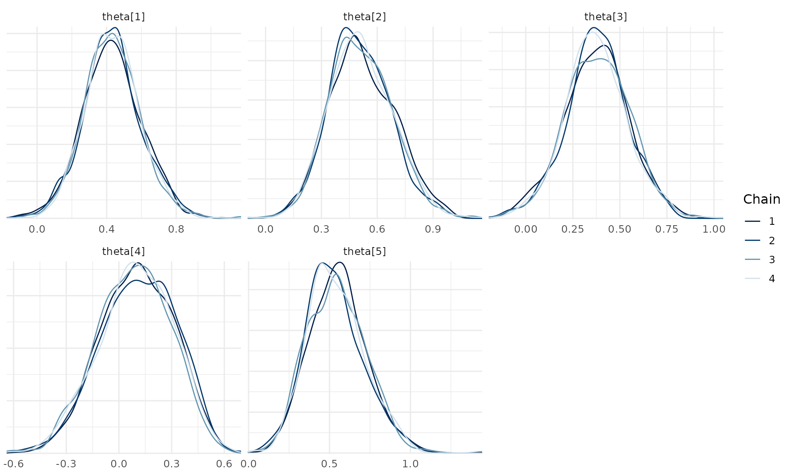
Interval Plots
Visualize posterior uncertainties:
# All thetas with 50% and 95% intervals
mcmc_intervals(draws, regex_pars = "theta", prob = 0.5, prob_outer = 0.95)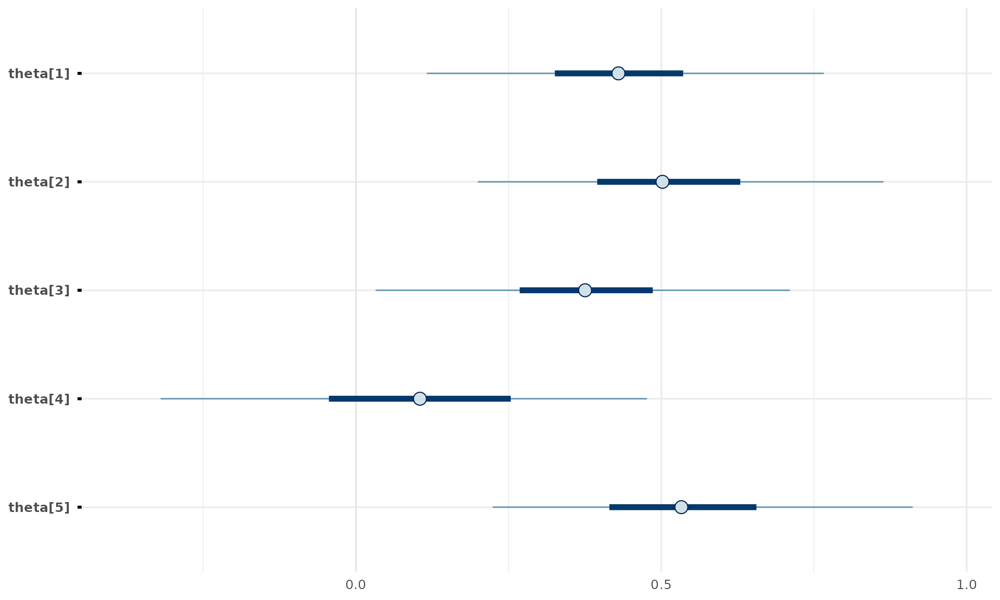
# With point estimates
mcmc_intervals_data(draws, regex_pars = "theta") %>%
ggplot(aes(y = parameter)) +
geom_pointrange(aes(x = m, xmin = ll, xmax = hh)) +
geom_point(aes(x = m), size = 3) +
labs(title = "Posterior Intervals for Regional Effects", x = "Effect Size", y = NULL)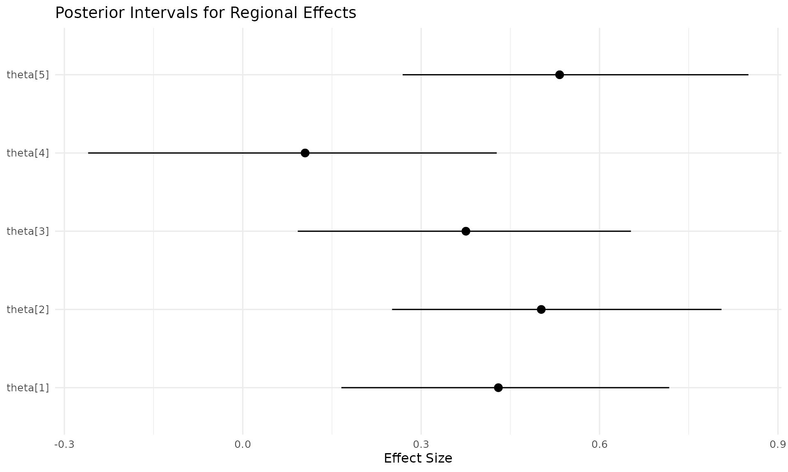
Area Plots
Density plots with shaded intervals:
# Hyperparameters
mcmc_areas(draws, pars = c("mu", "tau"), prob = 0.95, prob_outer = 0.99)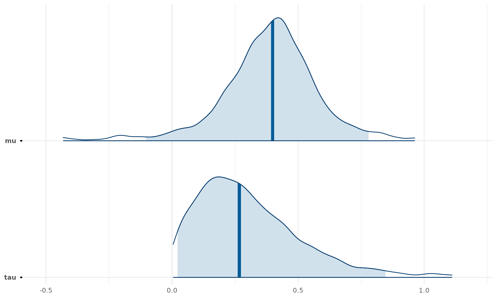
# All thetas
mcmc_areas(draws, regex_pars = "theta", prob = 0.8)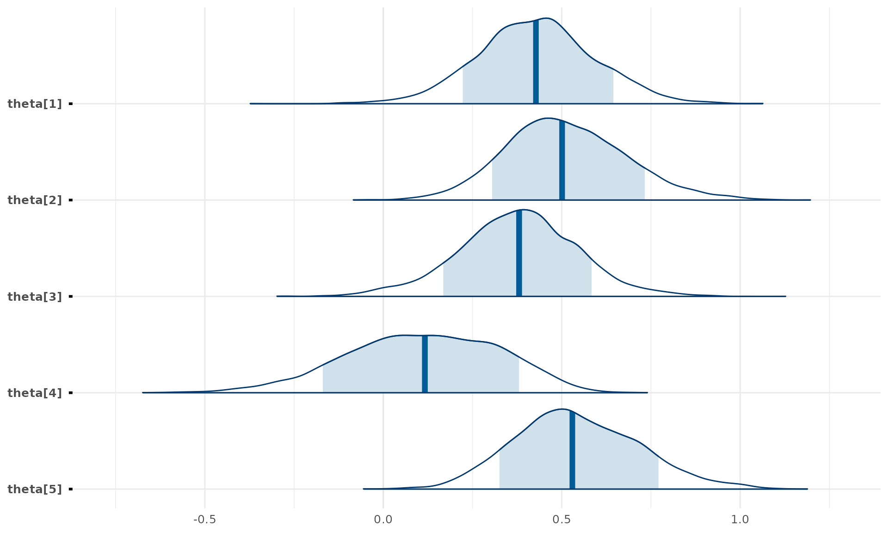
Tidy Analysis with tidybayes
tidybayes makes it easy to manipulate and visualize posteriors using tidy principles.
Spread and Gather Draws
# Gather theta parameters into long format
theta_tidy <- draws %>%
gather_draws(theta[region]) %>%
mutate(region = region_names[region])
head(theta_tidy)
#> # A tibble: 6 × 6
#> # Groups: region, .variable [1]
#> region .chain .iteration .draw .variable .value
#> <chr> <int> <int> <int> <chr> <dbl>
#> 1 North 1 1 1 theta 0.557
#> 2 North 1 2 2 theta 0.504
#> 3 North 1 3 3 theta 0.615
#> 4 North 1 4 4 theta 0.515
#> 5 North 1 5 5 theta 0.197
#> 6 North 1 6 6 theta 0.358
# Spread into wide format
theta_wide <- draws %>%
spread_draws(theta[region]) %>%
mutate(region = region_names[region])
head(theta_wide)
#> # A tibble: 6 × 5
#> # Groups: region [1]
#> region theta .chain .iteration .draw
#> <chr> <dbl> <int> <int> <int>
#> 1 North 0.557 1 1 1
#> 2 North 0.504 1 2 2
#> 3 North 0.615 1 3 3
#> 4 North 0.515 1 4 4
#> 5 North 0.197 1 5 5
#> 6 North 0.358 1 6 6Point and Interval Summaries
# Median and 95% quantile intervals
theta_tidy %>%
group_by(region) %>%
median_qi(.value, .width = 0.95)
#> # A tibble: 5 × 7
#> region .value .lower .upper .width .point .interval
#> <chr> <dbl> <dbl> <dbl> <dbl> <chr> <chr>
#> 1 Central 0.530 0.227 0.911 0.95 median qi
#> 2 East 0.380 0.0203 0.709 0.95 median qi
#> 3 North 0.428 0.106 0.756 0.95 median qi
#> 4 South 0.501 0.203 0.870 0.95 median qi
#> 5 West 0.117 -0.318 0.481 0.95 median qi
# Multiple interval widths
theta_tidy %>%
group_by(region) %>%
median_qi(.value, .width = c(0.5, 0.8, 0.95))
#> # A tibble: 15 × 7
#> region .value .lower .upper .width .point .interval
#> <chr> <dbl> <dbl> <dbl> <dbl> <chr> <chr>
#> 1 Central 0.530 0.424 0.660 0.5 median qi
#> 2 East 0.380 0.272 0.484 0.5 median qi
#> 3 North 0.428 0.321 0.532 0.5 median qi
#> 4 South 0.501 0.395 0.622 0.5 median qi
#> 5 West 0.117 -0.0367 0.272 0.5 median qi
#> 6 Central 0.530 0.325 0.771 0.8 median qi
#> 7 East 0.380 0.168 0.584 0.8 median qi
#> 8 North 0.428 0.223 0.645 0.8 median qi
#> 9 South 0.501 0.305 0.733 0.8 median qi
#> 10 West 0.117 -0.169 0.380 0.8 median qi
#> 11 Central 0.530 0.227 0.911 0.95 median qi
#> 12 East 0.380 0.0203 0.709 0.95 median qi
#> 13 North 0.428 0.106 0.756 0.95 median qi
#> 14 South 0.501 0.203 0.870 0.95 median qi
#> 15 West 0.117 -0.318 0.481 0.95 median qi
# Mean and HDI (highest density interval)
theta_tidy %>%
group_by(region) %>%
mean_hdi(.value, .width = 0.95)
#> # A tibble: 5 × 7
#> region .value .lower .upper .width .point .interval
#> <chr> <dbl> <dbl> <dbl> <dbl> <chr> <chr>
#> 1 Central 0.543 0.211 0.887 0.95 mean hdi
#> 2 East 0.377 0.0159 0.700 0.95 mean hdi
#> 3 North 0.428 0.122 0.765 0.95 mean hdi
#> 4 South 0.512 0.195 0.858 0.95 mean hdi
#> 5 West 0.110 -0.296 0.495 0.95 mean hdiCustom Summaries with dplyr
# Probability of positive effect
theta_tidy %>%
group_by(region) %>%
summarise(
mean_effect = mean(.value),
sd_effect = sd(.value),
prob_positive = mean(.value > 0),
prob_clinically_meaningful = mean(.value > 0.3),
.groups = "drop"
) %>%
arrange(desc(prob_positive))
#> # A tibble: 5 × 5
#> region mean_effect sd_effect prob_positive prob_clinically_meaningful
#> <chr> <dbl> <dbl> <dbl> <dbl>
#> 1 Central 0.543 0.175 1.000 0.927
#> 2 South 0.512 0.169 0.999 0.908
#> 3 North 0.428 0.166 0.993 0.794
#> 4 East 0.377 0.168 0.983 0.690
#> 5 West 0.110 0.212 0.695 0.207Computing Contrasts
# Method 1: Using shrinkr's built-in function
L <- rbind(
"South - North" = c(-1, 1, 0, 0, 0),
"Central - North" = c(-1, 0, 0, 0, 1),
"South - West" = c(0, 1, 0, -1, 0)
)
contrasts <- theta_contrasts(fit, L, labels = rownames(L))
summarise_draws(contrasts)
#> # A tibble: 3 × 10
#> variable mean median sd mad q5 q95 rhat ess_bulk ess_tail
#> <chr> <dbl> <dbl> <dbl> <dbl> <dbl> <dbl> <dbl> <dbl> <dbl>
#> 1 South - North 0.0831 0.0661 0.223 0.196 -0.257 0.475 1.00 4043. 2691.
#> 2 Central - No… 0.114 0.0894 0.227 0.204 -0.229 0.517 1.000 3714. 3437.
#> 3 South - West 0.402 0.388 0.288 0.317 -0.00529 0.900 1.00 1351. 1525.
# Method 2: Using tidybayes compare_levels
theta_wide %>%
compare_levels(theta, by = region, comparison = "pairwise") %>%
group_by(region) %>%
median_qi(theta) %>%
arrange(desc(theta))
#> # A tibble: 10 × 7
#> region theta .lower .upper .width .point .interval
#> <chr> <dbl> <dbl> <dbl> <dbl> <chr> <chr>
#> 1 South - East 0.111 -0.297 0.631 0.95 median qi
#> 2 South - North 0.0661 -0.338 0.564 0.95 median qi
#> 3 North - East 0.0382 -0.383 0.505 0.95 median qi
#> 4 South - Central -0.0200 -0.459 0.387 0.95 median qi
#> 5 North - Central -0.0894 -0.601 0.305 0.95 median qi
#> 6 East - Central -0.135 -0.663 0.236 0.95 median qi
#> 7 West - East -0.244 -0.808 0.142 0.95 median qi
#> 8 West - North -0.290 -0.878 0.0819 0.95 median qi
#> 9 West - South -0.388 -0.987 0.0471 0.95 median qi
#> 10 West - Central -0.421 -1.05 0.0376 0.95 median qiModern Visualizations with ggdist
ggdist provides publication-ready distribution visualizations.
Halfeye Plots
Eye + interval visualization:
theta_tidy %>%
ggplot(aes(y = region, x = .value)) +
stat_halfeye(
.width = c(0.66, 0.95),
fill = "steelblue"
) +
geom_vline(xintercept = 0, linetype = "dashed", alpha = 0.5) +
labs(
title = "Regional Treatment Effects",
subtitle = "Posterior distributions with median and 66%/95% intervals",
x = "Treatment Effect",
y = NULL
)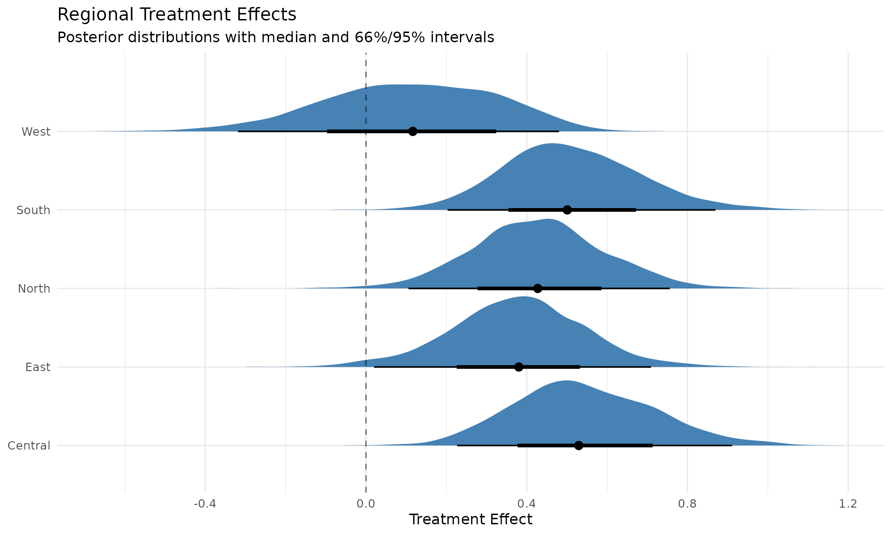
Slab + Interval
Density with separate interval layer:
theta_tidy %>%
ggplot(aes(y = region, x = .value)) +
stat_slab(aes(fill_ramp = after_stat(level)), fill = "steelblue", alpha = 0.8) +
stat_pointinterval(.width = c(0.66, 0.95), position = position_nudge(y = -0.15)) +
scale_fill_ramp_discrete(range = c(1, 0.2), guide = "none") +
labs(
title = "Posterior Densities with Quantile Intervals",
x = "Treatment Effect",
y = NULL
)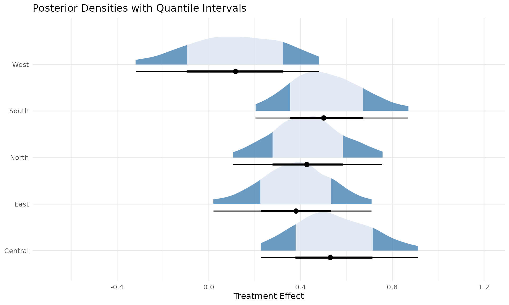
Quantile Dotplots
Each dot = quantile of the distribution:
theta_tidy %>%
ggplot(aes(y = region, x = .value)) +
stat_dots(quantiles = 100) +
geom_vline(xintercept = 0, linetype = "dashed", alpha = 0.5) +
labs(
title = "Quantile Dotplots",
subtitle = "Each dot represents 1% of the posterior",
x = "Treatment Effect",
y = NULL
)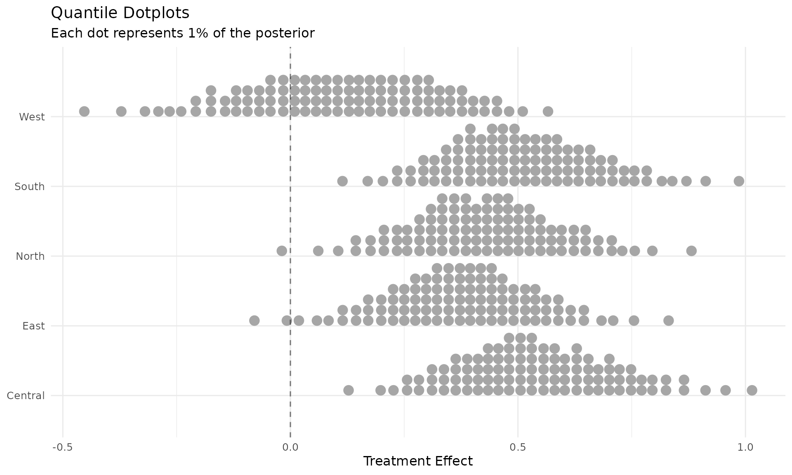
Gradient Intervals
Continuous representation of uncertainty:
theta_tidy %>%
ggplot(aes(y = region, x = .value)) +
stat_gradientinterval(.width = ppoints(50)) +
scale_color_brewer(palette = "Blues", guide = "none") +
labs(
title = "Gradient Interval Representation",
x = "Treatment Effect",
y = NULL
)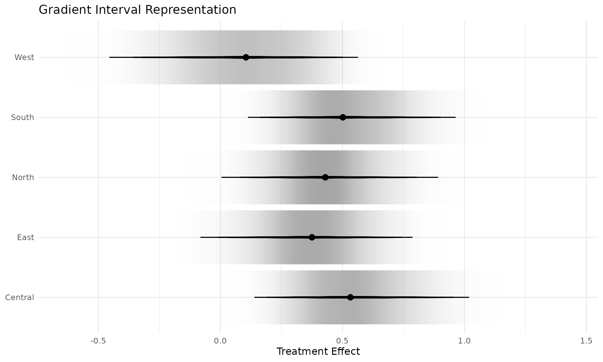
Comparing Pre- and Post-Shrinkage
Extract Both Estimates
# Get pre-shrunk estimates from mixture
pre_shrunk <- summarise_theta(fit) %>%
mutate(type = "Pre-shrunk")
# Get post-shrunk estimates
post_shrunk <- summarise_theta(fit) %>%
mutate(type = "Post-shrunk")
# Or use shrinkr's built-in plot
plot(fit, group_names = region_names)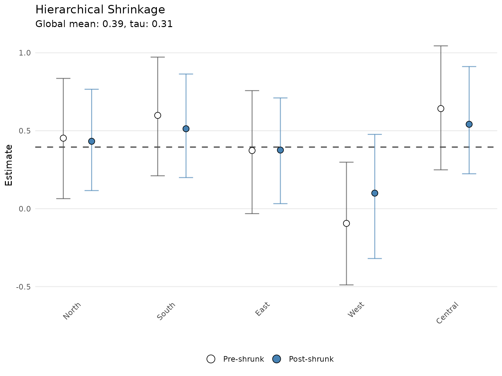
Custom Comparison Plot
# Get the hierarchical mean (mu)
mu_draws <- draws %>% spread_draws(mu)
mu_mean <- mean(mu_draws$mu)
# Combine with Stage 1 samples
stage1_draws <- lapply(seq_along(samples_list), function(i) {
data.frame(
region = region_names[i],
.value = samples_list[[i]][,1],
type = "Stage 1"
)
}) %>% bind_rows()
stage2_draws <- theta_tidy %>%
mutate(type = "Stage 2 (Shrunk)")
# Plot side by side
bind_rows(stage1_draws, stage2_draws) %>%
ggplot(aes(y = region, x = .value, fill = type)) +
stat_halfeye(alpha = 0.7, position = position_dodge(width = 0.4)) +
geom_vline(xintercept = 0, linetype = "dashed", alpha = 0.5, color = "gray50") +
geom_vline(xintercept = mu_mean, linetype = "solid", alpha = 0.8,
color = "darkred", linewidth = 1) +
annotate("text", x = mu_mean, y = 0.5,
label = sprintf("Global mean (μ) = %.2f", mu_mean),
hjust = -0.1, color = "darkred", size = 3.5) +
scale_fill_manual(values = c("Stage 1" = "gray70", "Stage 2 (Shrunk)" = "steelblue")) +
labs(
title = "Stage 1 vs Stage 2: Effect of Hierarchical Shrinkage",
subtitle = "Stage 2 estimates are pulled toward the global mean",
x = "Treatment Effect",
y = NULL,
fill = NULL
) +
theme(legend.position = "bottom")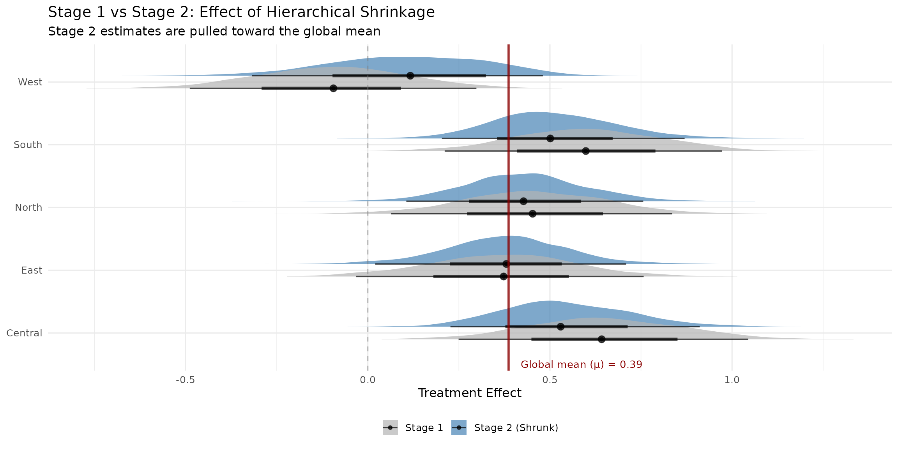
Complete Workflow Example
Here’s a typical analysis workflow using tidy principles:
# 1. Extract and prepare data
analysis_data <- draws %>%
spread_draws(mu, tau, theta[i]) %>%
mutate(region = region_names[i])
# 2. Compute summaries
summary_table <- analysis_data %>%
group_by(region) %>%
summarise(
mean = mean(theta),
median = median(theta),
sd = sd(theta),
q025 = quantile(theta, 0.025),
q975 = quantile(theta, 0.975),
prob_positive = mean(theta > 0),
prob_clinically_important = mean(theta > 0.3),
.groups = "drop"
) %>%
arrange(desc(median))
print(summary_table)
#> # A tibble: 5 × 8
#> region mean median sd q025 q975 prob_positive prob_clinically_impor…¹
#> <chr> <dbl> <dbl> <dbl> <dbl> <dbl> <dbl> <dbl>
#> 1 Central 0.543 0.530 0.175 0.227 0.911 1.000 0.927
#> 2 South 0.512 0.501 0.169 0.203 0.870 0.999 0.908
#> 3 North 0.428 0.428 0.166 0.106 0.756 0.993 0.794
#> 4 East 0.377 0.380 0.168 0.0203 0.709 0.983 0.690
#> 5 West 0.110 0.117 0.212 -0.318 0.481 0.695 0.207
#> # ℹ abbreviated name: ¹prob_clinically_important
# 3. Create advanced figure
library(patchwork)
p1 <- analysis_data %>%
ggplot(aes(y = reorder(region, theta), x = theta)) +
stat_halfeye(.width = c(0.66, 0.95), fill = "steelblue") +
geom_vline(xintercept = 0, linetype = "dashed", alpha = 0.5) +
labs(
title = "A. Regional Treatment Effects",
x = "Effect Size",
y = NULL
)
p2 <- analysis_data %>%
dplyr::ungroup() %>%
dplyr::select(mu, tau, .draw) %>%
dplyr::distinct() %>%
tidyr::pivot_longer(cols = c(mu, tau), names_to = "name", values_to = "value") %>%
ggplot(aes(x = value, fill = name)) +
stat_halfeye(alpha = 0.7) +
facet_wrap(~name, scales = "free", labeller = label_both) +
scale_fill_brewer(palette = "Set2") +
labs(
title = "B. Hyperparameters",
x = "Value",
y = "Density"
) +
theme(legend.position = "none")
p3 <- analysis_data %>%
dplyr::ungroup() %>%
dplyr::select(.draw, region, theta) %>%
compare_levels(theta, by = region) %>%
ggplot(aes(y = region, x = theta)) +
stat_halfeye(fill = "coral", alpha = 0.7) +
geom_vline(xintercept = 0, linetype = "dashed", color = "red", alpha = 0.5) +
labs(
title = "C. Pairwise Regional Comparisons",
x = "Difference in Effect Size",
y = NULL
)
p4 <- analysis_data %>%
dplyr::ungroup() %>%
dplyr::select(.draw, mu, tau) %>%
dplyr::distinct() %>%
ggplot(aes(x = mu, y = tau)) +
geom_hex(bins = 30) +
stat_ellipse(level = 0.95, color = "red", linewidth = 1) +
scale_fill_viridis_c() +
labs(
title = "D. Hyperparameter Correlation",
x = expression(mu~"(global mean)"),
y = expression(tau~"(heterogeneity)")
)
(p1 + p2) / (p3 + p4) +
plot_annotation(
title = "Complete Bayesian Shrinkage Analysis",
subtitle = sprintf(
"Global effect: %.2f [%.2f, %.2f] | Heterogeneity (tau): %.2f",
median(analysis_data$mu),
quantile(analysis_data$mu, 0.025),
quantile(analysis_data$mu, 0.975),
median(analysis_data$tau)
)
)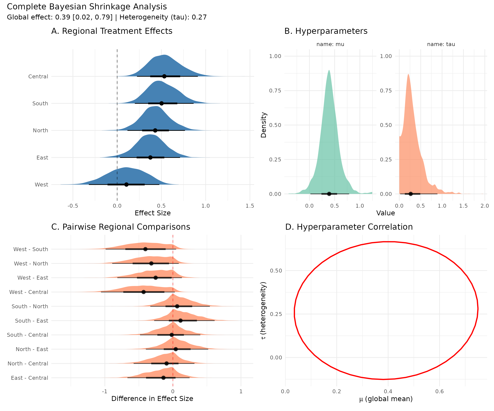
Advanced: Custom Analyses
Probability Statements
# Which region is best?
analysis_data %>%
group_by(.draw) %>%
slice_max(theta, n = 1) %>%
ungroup() %>%
count(region) %>%
mutate(probability = n / sum(n)) %>%
arrange(desc(probability))
#> # A tibble: 5 × 3
#> region n probability
#> <chr> <int> <dbl>
#> 1 Central 1628 0.407
#> 2 South 1294 0.324
#> 3 North 655 0.164
#> 4 East 377 0.0942
#> 5 West 46 0.0115
# Alternative: probability each region is best
analysis_data %>%
group_by(.draw) %>%
mutate(rank = rank(-theta)) %>%
ungroup() %>%
group_by(region) %>%
summarise(
prob_best = mean(rank == 1),
prob_top2 = mean(rank <= 2),
mean_rank = mean(rank),
.groups = "drop"
) %>%
arrange(mean_rank)
#> # A tibble: 5 × 4
#> region prob_best prob_top2 mean_rank
#> <chr> <dbl> <dbl> <dbl>
#> 1 Central 0.407 0.693 2.05
#> 2 South 0.324 0.623 2.24
#> 3 North 0.164 0.382 2.84
#> 4 East 0.0942 0.27 3.21
#> 5 West 0.0115 0.0322 4.65
# Pairwise comparisons: Probability that South > North
# Create wide format for comparisons
theta_wide_for_contrasts <- analysis_data %>%
ungroup() %>%
dplyr::select(.draw, region, theta) %>%
tidyr::pivot_wider(names_from = region, values_from = theta)
theta_wide_for_contrasts %>%
summarise(
prob_south_beats_north = mean(South > North),
prob_south_beats_north_by_02 = mean((South - North) > 0.2),
prob_central_beats_all = mean(
Central > North & Central > South &
Central > East & Central > West
)
)
#> # A tibble: 1 × 3
#> prob_south_beats_north prob_south_beats_north_by_02 prob_central_beats_all
#> <dbl> <dbl> <dbl>
#> 1 0.644 0.271 0.407Tail Probabilities
# Classify effects into categories
theta_tidy %>%
group_by(region) %>%
summarise(
prob_harm = mean(.value < -0.1),
prob_null = mean(abs(.value) < 0.1),
prob_small_benefit = mean(.value > 0.1 & .value < 0.3),
prob_large_benefit = mean(.value > 0.3),
.groups = "drop"
) %>%
arrange(desc(prob_large_benefit))
#> # A tibble: 5 × 5
#> region prob_harm prob_null prob_small_benefit prob_large_benefit
#> <chr> <dbl> <dbl> <dbl> <dbl>
#> 1 Central 0 0.004 0.069 0.927
#> 2 South 0 0.0045 0.0872 0.908
#> 3 North 0.00175 0.0217 0.183 0.794
#> 4 East 0.00325 0.0488 0.258 0.690
#> 5 West 0.167 0.309 0.317 0.207
# Visualize classification
theta_tidy %>%
mutate(
category = case_when(
.value < -0.1 ~ "Harm",
abs(.value) < 0.1 ~ "Null",
.value > 0.1 & .value < 0.3 ~ "Small Benefit",
.value > 0.3 ~ "Large Benefit"
)
) %>%
count(region, category) %>%
group_by(region) %>%
mutate(probability = n / sum(n)) %>%
ggplot(aes(x = probability, y = region, fill = category)) +
geom_col(position = "stack") +
scale_fill_manual(
values = c(
"Harm" = "red",
"Null" = "gray",
"Small Benefit" = "lightblue",
"Large Benefit" = "darkblue"
)
) +
labs(
title = "Classification of Treatment Effects",
x = "Probability",
y = NULL,
fill = "Effect Category"
) +
theme(legend.position = "bottom")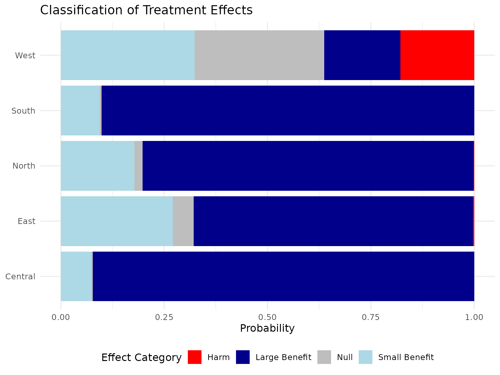
Ranking Analysis
# Compute ranks for each draw
rank_data <- analysis_data %>%
group_by(.draw) %>%
mutate(rank = rank(-theta)) %>%
ungroup()
# Summary statistics
rank_summary <- rank_data %>%
group_by(region) %>%
summarise(
mean_rank = mean(rank),
median_rank = median(rank),
prob_rank1 = mean(rank == 1),
prob_rank2 = mean(rank == 2),
prob_top3 = mean(rank <= 3),
.groups = "drop"
) %>%
arrange(mean_rank)
print(rank_summary)
#> # A tibble: 5 × 6
#> region mean_rank median_rank prob_rank1 prob_rank2 prob_top3
#> <chr> <dbl> <dbl> <dbl> <dbl> <dbl>
#> 1 Central 2.05 2 0.407 0.286 0.876
#> 2 South 2.24 2 0.324 0.300 0.839
#> 3 North 2.84 3 0.164 0.218 0.675
#> 4 East 3.21 3 0.0942 0.176 0.528
#> 5 West 4.65 5 0.0115 0.0208 0.0818
# Visualize ranking distribution
rank_data %>%
ggplot(aes(x = rank, y = reorder(region, -theta))) +
stat_dots(quantiles = 100) +
scale_x_continuous(breaks = 1:5) +
labs(
title = "Ranking Distribution",
subtitle = "Each dot represents 1% of posterior draws",
x = "Rank (1 = best, 5 = worst)",
y = NULL
)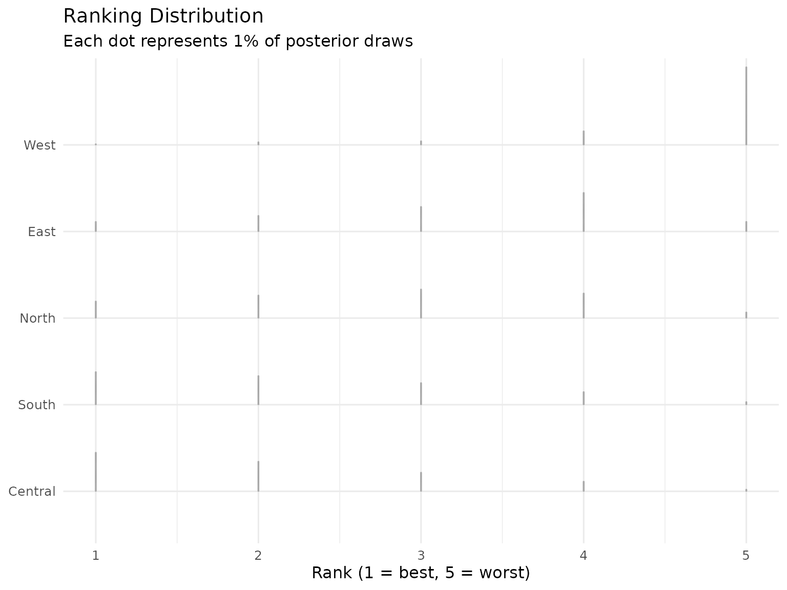
# Alternative: bar chart of ranking probabilities
rank_data %>%
count(region, rank) %>%
group_by(region) %>%
mutate(probability = n / sum(n)) %>%
ggplot(aes(x = rank, y = probability, fill = region)) +
geom_col() +
facet_wrap(~region, ncol = 1) +
scale_x_continuous(breaks = 1:5) +
scale_fill_brewer(palette = "Set2") +
labs(
title = "Probability of Each Rank by Region",
x = "Rank (1 = best)",
y = "Probability"
) +
theme(legend.position = "none")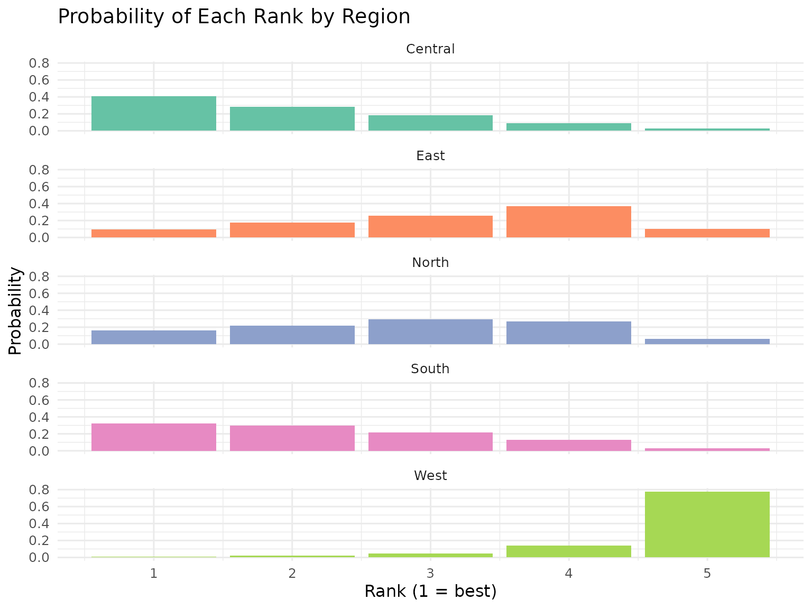
Further Reading
- posterior package: https://mc-stan.org/posterior/
- bayesplot package: https://mc-stan.org/bayesplot/
- tidybayes package: http://mjskay.github.io/tidybayes/
- ggdist package: https://mjskay.github.io/ggdist/